HELP FIND THE FOLLOWING LOCATIONS
PAGE 53
GIDEON'S WAY: Subway to Revenge (Roy Baker: January 1965)
Neasden Lane, NW10 – After being identified as the
stalker John Stewart (Bryan Pringle)
wanders off by the railway.


 Jaz Wiseman – July 2007 – “The
building you can see in the first grab looks like the entrance to Neasden
underground station on Neasden
Lane.
There is a path on the opposite side that was still there when I lived nearby
(about 5 years ago). The tube train looks like it’s traveling between Neasden and Wembley
Park.”
Jaz Wiseman – July 2007 – “The
building you can see in the first grab looks like the entrance to Neasden
underground station on Neasden
Lane.
There is a path on the opposite side that was still there when I lived nearby
(about 5 years ago). The tube train looks like it’s traveling between Neasden and Wembley
Park.”
Stephen Carter, August 2007 – “Confirmation of Jaz's suggestion. The building in the first pic - probably a shop - is no longer
there. The station is further to the left (out of shot).”
Unknown 2 – A he is in the area Commander
Gideon (John Gregson)
takes the opportunity to visit Martha Robson’s home.
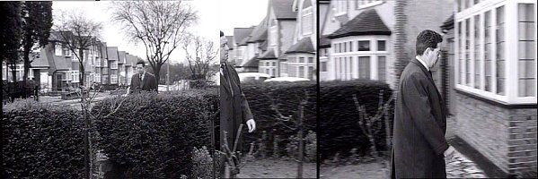
Unknown 3 – After leaving work James Lanegoes to catch his train home from the nearby tube
station. Whilst waiting for a train to station Ellen Winters sees a man attempt
to push James in front of an approaching train.
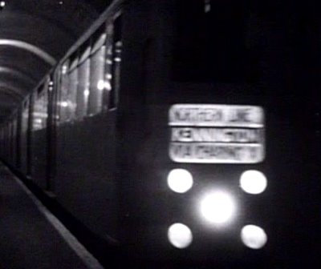
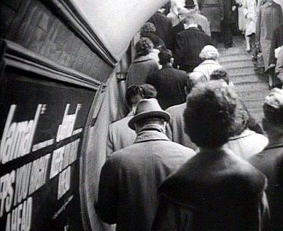
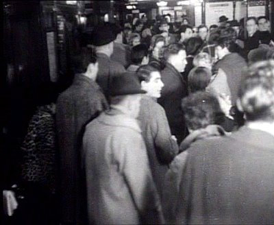
Sudbury
House, 15
Newgate
Street,
EC3 (Demolished)
James
Lane
(Donald Churchill) arrives at Chinnery
Chemicals were he works and bumps into Ellen Winters (Anne Lawson), a colleague
who has been admiring.
(Spotted by Jaz
Wiseman, August 2001)


Newgate Street
EC1 -Stewart (Bryan
Pringle) follows James
Lane
(Donald Churchill) from work.


Stephen Carter – “Stewart (Bryan
Pringle) follows James
Lane
(Donald Churchill). Like "Chinnery Chemicals" already in
the guide, this is also on Newgate
Street EC1, but further along at the junction with Giltspur Street.
The imposing church in the background is the Holy Sepulchre-without-Newgate.
Attached is a photo taken today - a shame that 42 years of growth means the
trees now obscure the church from this angle. (I guess a winter-time
visit would get around this.) Not surprisingly, "The Scout and Guide
Shop" at no. 125 is gone. It's currently a "Toni and Guy"
hairdressing salon. One thing that hasn't changed is the numerous taxis.”
Q15: Barnet
Lane
at the junction with Oak
Tree Court-
Ellen Winters chides Jimmy Lane for not reporting his attempted
murder to the desk sergeant at the local police station.

Unknown 4 – After arriving at their station
Ellen Winters (Anne Lawson) interrogates
James Lane
(Donald Churchill) as
to why he will not report an attempt on his life to the police.


Jaz Wiseman – July 2007 – “Looks like Edgware”
Q18 Stonegrove House, Stonegrove, Edgware - James Lane
(Donald Churchill) escorts
Ellen Winters (Anne Lawson) to her a bedsit at Stonegrove House, 86
Wells Avenue. Late one night John Stewart (Bryan Pringle) arrives to take revenge on Lane by killing Ellen.
(Spotted by Jaz
Wiseman, August 2005)
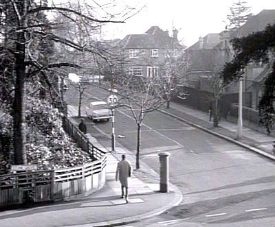

Unknown 5 – A police man is touring London
handing out photo-fits of John Stewart.

Unknown 6 – A pair of plane clothed policemen
are watched by John Stewart (Bryan
Pringle).
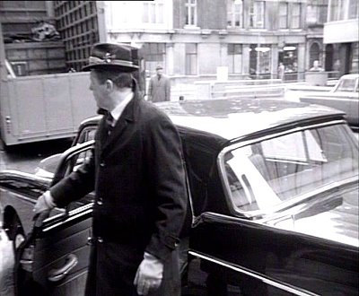
Near Bedford
Row, WC1?
Unknown 6a – A police car is touring London
handing out photo-fits of John Stewart.

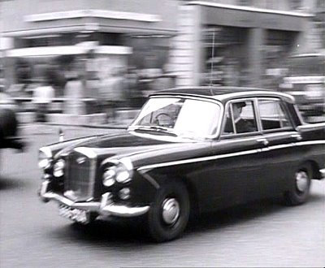
Unknown 7 – James Lane
(Donald Churchill) arrives home but is being watched by John Stewart (Bryan
Pringle).
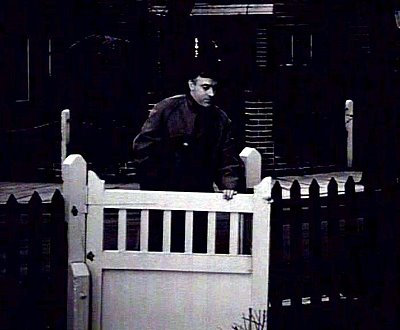
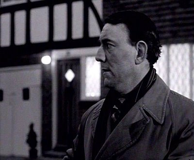
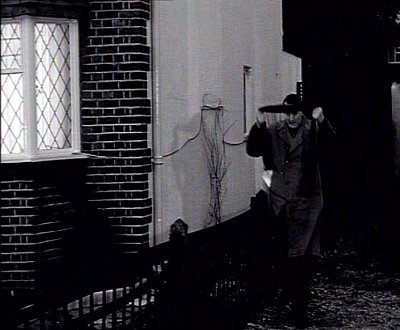

Trafalgar Square
, WC2 - James
Lane
(Donald Churchill) and his girlfriend Ellen Winters (Anne Lawson)
enter the National Gallery. After their visit they leave from the main entrance
and wait to cross the road to St. Martins in the Fields
Church.
John Stewart (Bryan Pringle) who is out to kill James goes to push him
in front of an approaching bus (No.24) but is noticed by Anne. Stewart quickly
leaves and James and
Anne cross the road safely.
(Spotted by Jaz
Wiseman, August 2001)


Unknown 8 – Commander Gideon (John Gregson) and
Detective Chief Inspector David Keen (Alexander Davion) are at number 29
arresting the leader of a gang involved in an armed robbery.
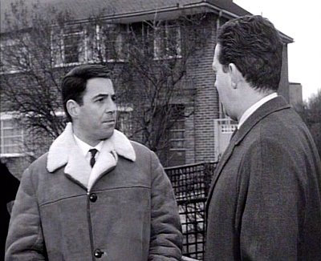

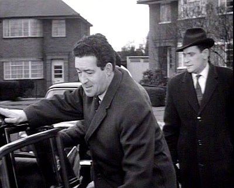
Jaz Wiseman – July 2007 – “Looks like Edgware”
St. Pancras Way,
NW1 – Gideon is
travelling with Keen in a police car when they get a call from detective
Superintendent Lemaitre.
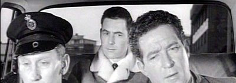
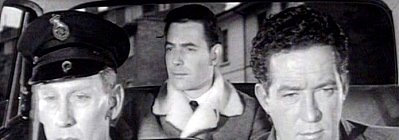
Unknown 9 – John Stewart notices that police
cars are searching the area.

Unknown 10 – John Stewart (Bryan Pringle) leaves work early from Chinnery Chemicals
after seeing his photo fit in the papers.

Brownlow Street
WC1 - Stewart
(Bryan Pringle) steals a car
in a quiet side-street.
(Spotted
by Stephen Carter, July 2007)


Bedford
Row, WC1 - John
Stewart (Brian Pringle) spots the police and fearing they are looking
for him sets off down Bedford Row.
(Spotted by Jaz
Wiseman, August 2005)


Oxford Street,
W1 and New Bond
Street,
SW1 - Gideon and
Keen set off in a police car to James Lane’s
home.
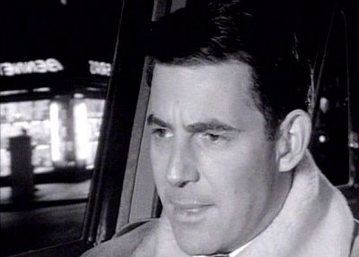
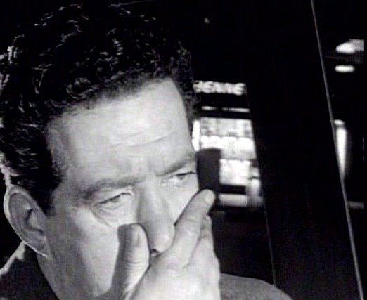
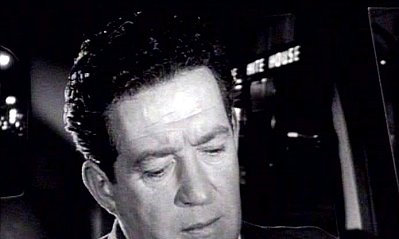
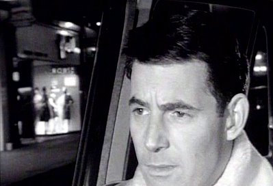
Bennett’s Cameras – 117
Oxford Street,
W1
The White House – New Bond
Street,
SW1
Unknown 11 – Gideon and Keen set off in a
police car to James Lane’s
home. Later James Lane
overhears the call for cars to got
to 86 Wells Avenue
whilst being taken home by two officers in a police car.

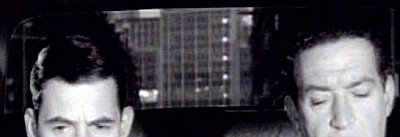
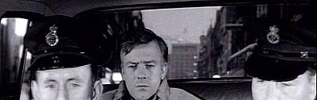
Unknown 12 – Gideon and Keen set off in a police
car to James Lane’s
home.

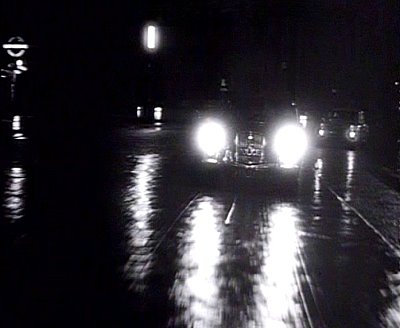

Unknown 13 – John Stewart is walking past a
shop window display when a wedding scene sets him to thinking of a different
form of revenge.
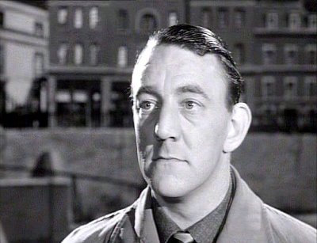
Pinner,
Middlesex - John Stewart parks his car in a
cinema car park (ABC
Cinema Bridge Street
Pinner, next to the Hong Ying Restaurant).
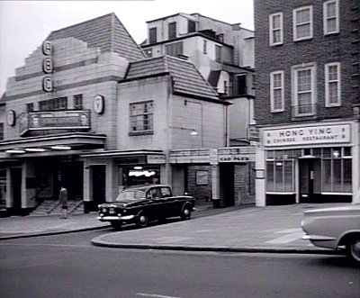
Think you know a spot? Need a bigger image? Email me.
< Previous | Index | Avengerland | Next
>
Copyright © 2003 Anthony R. McKay